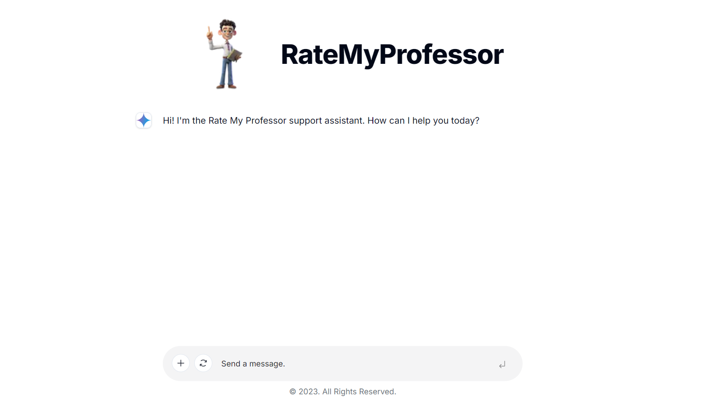
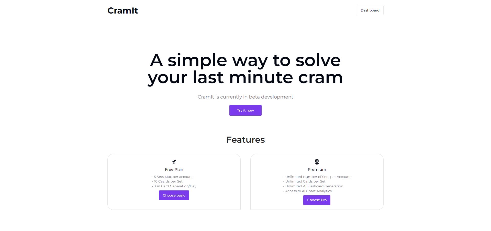
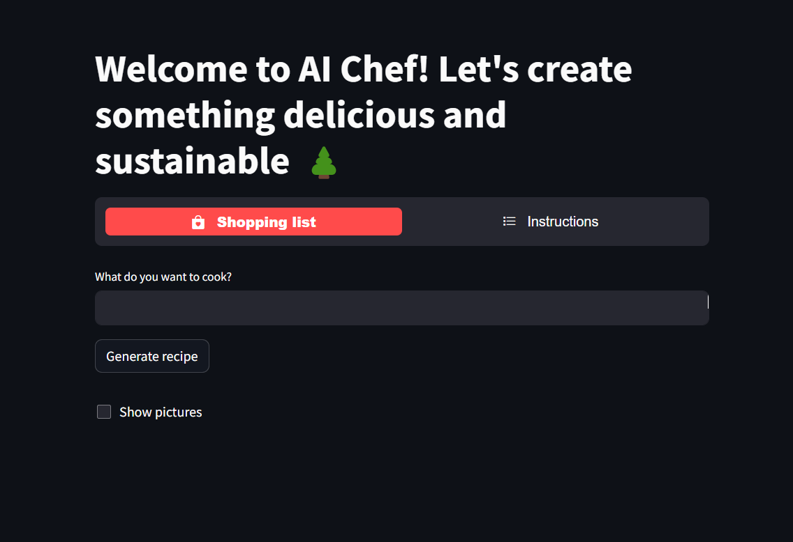
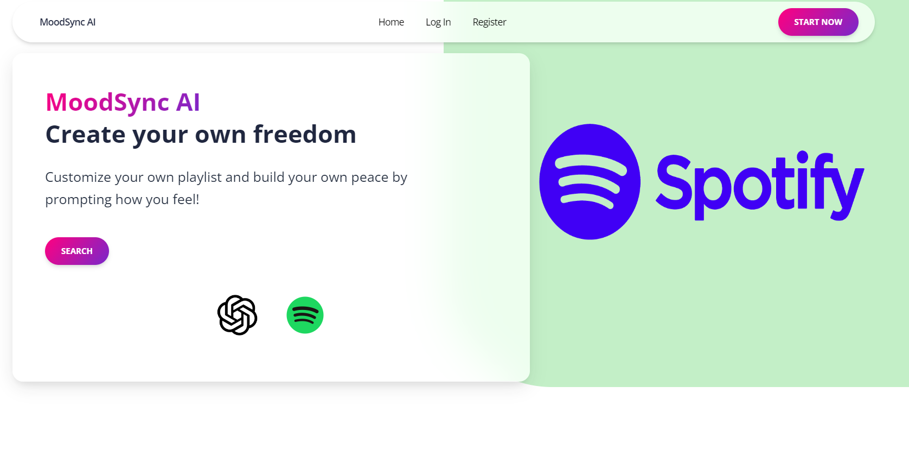
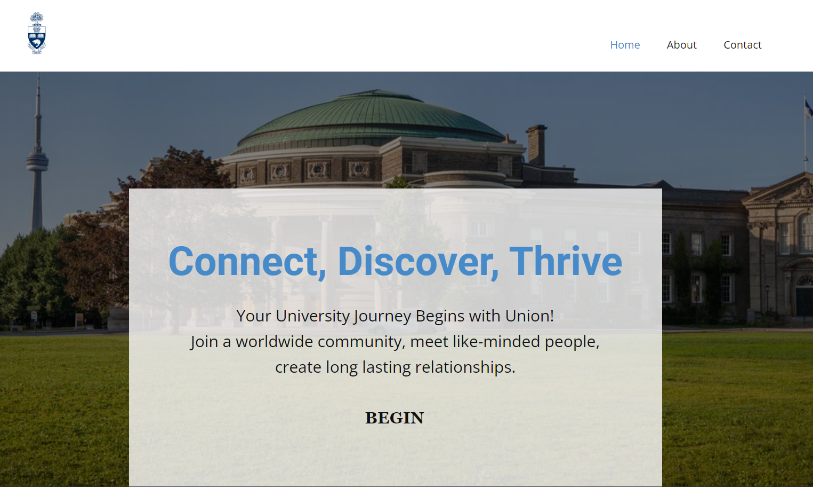
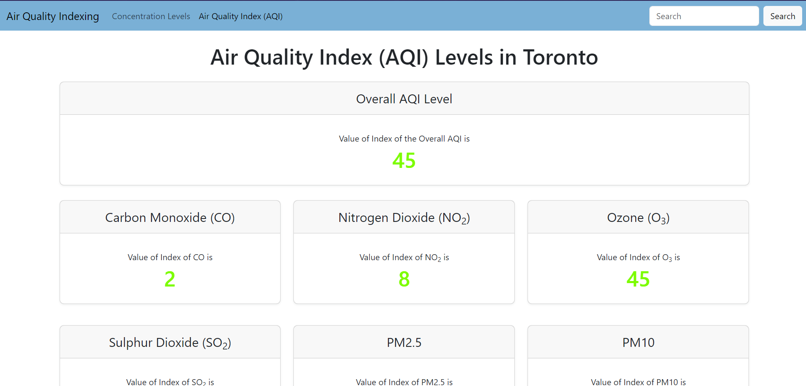

Make an informed and educated decision on your next course by
using Rate My Professor AI. This web application uses AI with knowledge-based (RAG)
language model to generate reviews for professors. By using web scraping, it dynamically
imports data from ratemyprofessors.com to pinecone vector database.

CramIt is a web application that uses AI to generate
flashcards for students. It uses the Gemini model to generate
flashcards based on the user's input using RAG for knowledge
based LLM. The user can then save the flashcards to their
account (firebase) and review them later. Clerk is used for
authentication and Stripe for payment.
EZSpeech
EZSpeech aims to bridge language barriers, fostering stronger
communities through enhanced communication. Moreover, EZSpeech
facilitates the rapid dissemination of information across
borders, enhancing global connectivity and collaboration.

Sustainable Chef
A personal AI chef that tells you how to create your favorite
dishes with sustainable ingredients and steps. Using
Generative AI, AI Chef devises a recipe for the specified food
with sustainability and low waste in mind.

Mood Sync AI
A web application that generates playlist depending on how the
user is feeling. It uses prompt engineering to train GPT model
and parse the output to Spotify.

Union (Start-up Winner Project)
UNION is an app designed to help first-year and transfer
university students connect with their peers. By matching
users based on their university, program, courses, and
interests, UNION aims to foster a more inclusive and connected
university community. It’s an essential tool for students
seeking to build meaningful connections and integrate smoothly
into campus life.

Air Quality Indexing
A simple website that shows the air quality data of any
location worldwide requested by the client. The data includes
Carbon Monoxide, Nitrogen Dioxide, Ozone, Sulphur Dioxide, and
Particulate Matter 2.5 and 1.0.